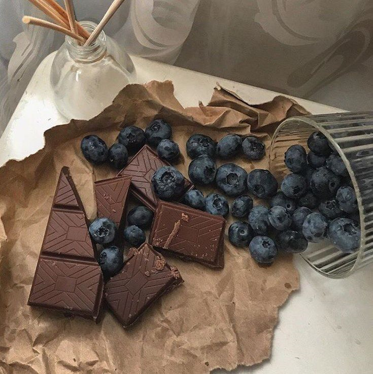

Mengamati Keajaiban si Kecil Biru: Laporan Hasil Observasi Buah Blueberry
Buah blueberry adalah buah kecil berwarna biru keunguan yang berasal dari tanaman berbunga genus Vaccinium. Buah ini tumbuh subur di daerah beriklim sedang, seperti Amerika Utara, Eropa, dan beberapa wilayah di Asia. Blueberry terkenal karena perpaduan rasa manis-asamnya yang menyegarkan serta kandungan gizinya yang sangat tinggi, sehingga buah ini banyak dikonsumsi segar maupun diolah menjadi muffin, pai, smoothies, dan selai.
Kandungan serat alami yang tinggi serta melimpahnya antioksidan bermanfaat besar bagi kesehatan jantung, kelancaran sistem pencernaan, peningkatan kekebalan tubuh, dan merawat kecantikan kulit. Blueberry adalah contoh nyata buah lezat nan berkhasiat tinggi untuk konsumsi harian.